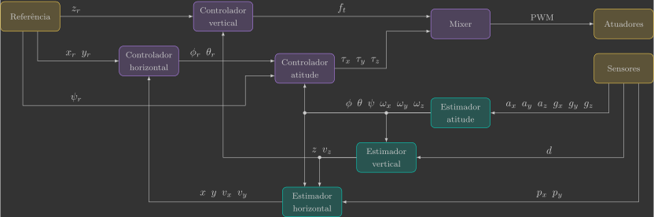
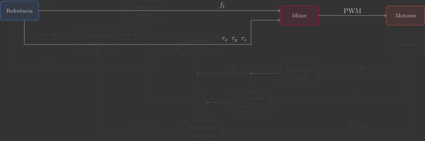

Arquitetura
Para controlar um drone, precisamos de uma arquitetura bem definida. Essa arquitetura estabelece como as informações dos sensores são processadas por estimadores, comparadas com as referências pelos controladores e, por fim, enviadas como comandos aos atuadores.
O diagrama abaixo resume essa sequência em blocos:

No diagrama:
- Os blocos representam as funções que serão chamadas no loop principal.
- As setas representam as variáveis que fluem de um bloco a outro.
A passagem dessas informações entre as funções será feita por meio de variáveis globais(1), que atuarão como o “fio” que conecta os módulos do sistema.
- Embora variáveis globais não sejam a melhor prática em programação, aqui adotamos essa solução para manter o código em C mais direto, evitando o excesso de ponteiros e semáforos. Como o foco do curso está na teoria de controle — e não em engenharia de software — essa escolha facilita a compreensão sem comprometer o aprendizado.
Variáveis globais
Logo no início do código, declararemos as variáveis que representam os atuadores, sensores, entradas, estados e referências — espelhando o diagrama.
// Actuators
float pwm1, pwm2, pwm3, pwm4; // Motors PWM
// Sensors
float ax, ay, az; // Accelerometer [m/s^2]
float gx, gy, gz; // Gyroscope [rad/s]
float d; // Range [m]
float px, py; // Optical flow [pixels]
// System inputs
float ft; // Thrust force [N]
float tx, ty, tz; // Roll, pitch and yaw torques [N.m]
// System states
float phi, theta, psi; // Euler angles [rad]
float wx, wy, wz; // Angular velocities [rad/s]
float x, y, z; // Positions [m]
float vx, vy, vz; // Velocities [m/s]
// System references
float phi_r, theta_r, psi_r; // Euler angles reference [rad]
float x_r, y_r, z_r; // Positions reference [m]
Loop principal
Toda a lógica de controle será implementada dentro de um loop que roda a 200 Hz (ou seja, a cada 5 ms). Dentro desse loop, chamamos as funções na sequência do diagrama: referências → sensores → estimadores → controladores → atuadores.
// Main application task
void appMain(void *param)
{
// Infinite loop (runs at 200Hz)
while (true)
{
reference(); // Read reference setpoints (from Crazyflie Client)
sensors(); // Read raw sensor measurements
attitudeEstimator(); // Estimate orientation (roll/pitch/yaw) from IMU sensor
verticalEstimator(); // Estimate vertical position/velocity from range sensor
horizontalEstimator(); // Estimate horizontal positions/velocities from optical flow sensor
horizontalController(); // Compute desired roll/pitch angles
verticalController(); // Compute desired thrust force
attitudeController(); // Compute desired roll/pitch/yaw torques
mixer(); // Convert desired force/torques into motor PWM
motors(); // Send commands to motors
vTaskDelay(pdMS_TO_TICKS(5)); // Loop delay (5 ms)
}
}
Implementação
A implementação será feita passo a passo, uma função por vez. Dessa forma, você poderá entender o papel de cada bloco isoladamente antes de ver o sistema completo em ação.

Nos próximos capítulos, começaremos pelo mixer e, em seguida, avançaremos para os blocos de estimadores e controladores. Cada subsistema será estudado em pares — estimador e controlador de atitude, vertical (altura) e horizontal (posição no plano). Ao final, você terá construído, passo a passo, a arquitetura de controle completa de um drone.